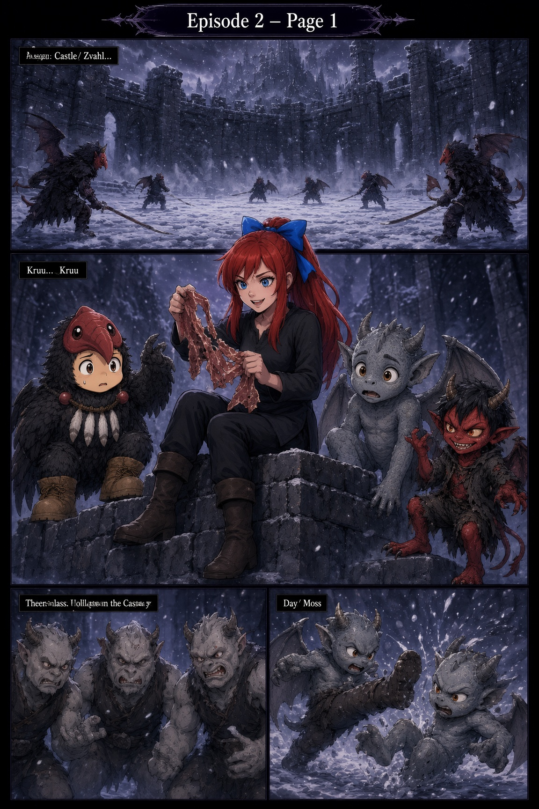
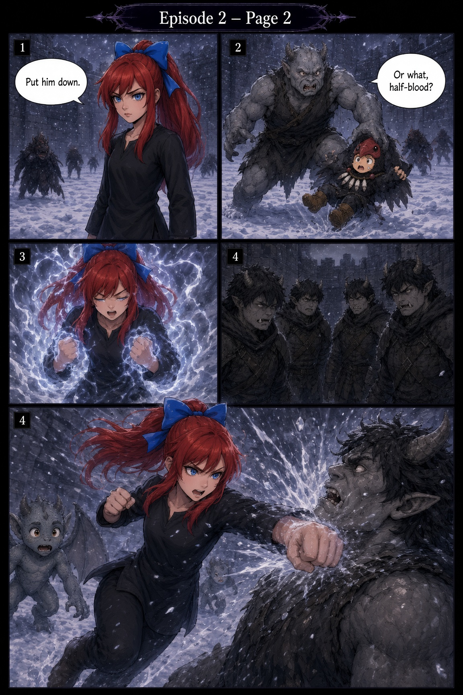
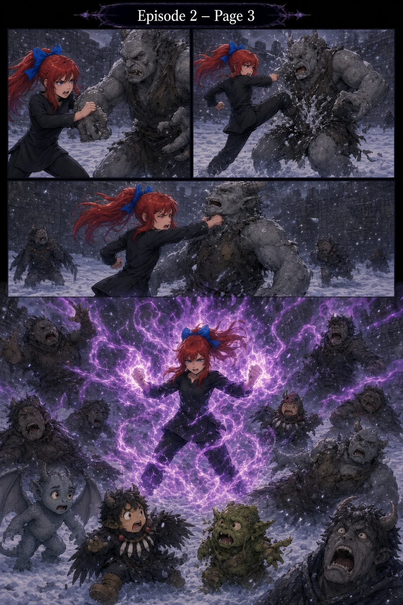
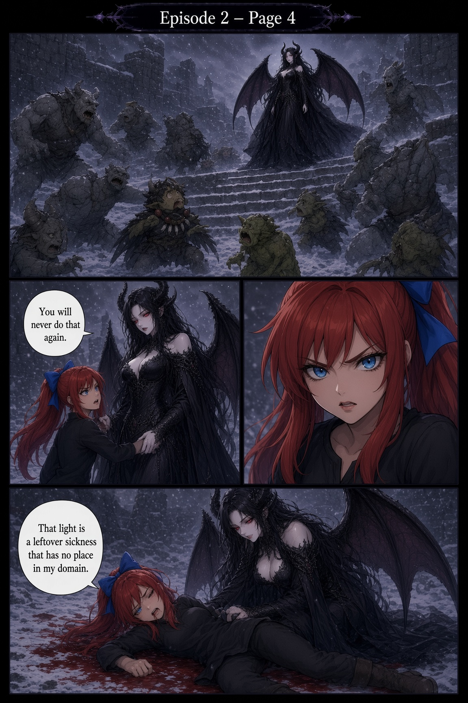
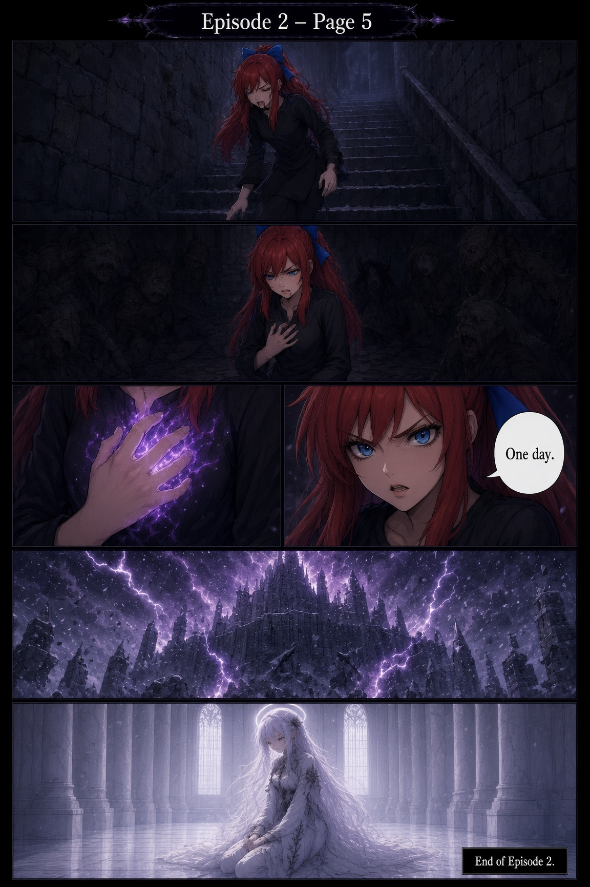

Assign: Castle Zvahl.
Snow falls over the outer bailey as older Kindred drill with blades in the dark. Amelia sits on a broken wall with the only friends she has ever chosen for herself—a small feathered misfit, a grey-winged hatchling, and a grinning red imp. She holds up a strip of dried meat like a prize.
The little ones laugh. For a moment the castle feels almost ordinary.
Then the older trainees notice them. Three grey brutes close in. One of them kicks the hatchling into the snow. Another snatches the feathered child off the ground and holds him like a toy.
Amelia stands.
“Put him down.”
The Kindred sneers.
“Or what, half-blood?”
Something inside her answers before she does. Hume monk chakra—her mother’s old discipline, buried under years of demonic camouflage—ignites. Lightning crawls over her fists. She drives a punch into the nearest face hard enough to spray ice and blood across the snow.
She does not stop. She grapples. She kicks. She hits again.
Then the spark becomes more than a spark.
Violet fire bursts from her body in a silent, smokeless storm. Kindred trainees stagger back. Her friends freeze in the snow, terrified and amazed. For the first time, the castle sees what Amelia actually is: not a camouflaged demon child, but a hybrid carrying a light that does not belong here.
The snowfield goes still.
On the stairs above them, her mother arrives—wings unfurled, the court falling silent around her. She takes Amelia by the arm.
“You will never do that again.”
Amelia looks up, stunned and furious. The mother does not raise her voice. She does not need to. She puts the girl on the ground and speaks as if stating a law of the fortress.
“That light is a leftover sickness that has no place in my domain.”
Amelia crawls back into the castle on her own. Blood at her mouth. Demons watching from the dark. In the stairwell she presses a hand to her chest. The violet spark is still there, hidden under skin and cloth, refusing to die.
She looks straight ahead.
“One day.”
Lightning tears across the towers of Zvahl. Far above, in a white hall that never sees the sun, Celeste sits alone and waits for a sister who does not come.
End of Episode 2